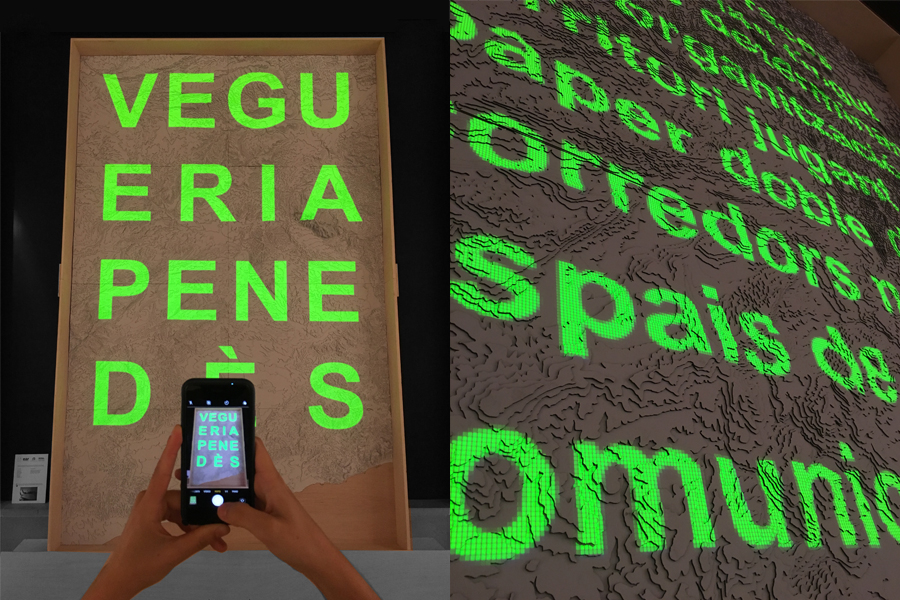
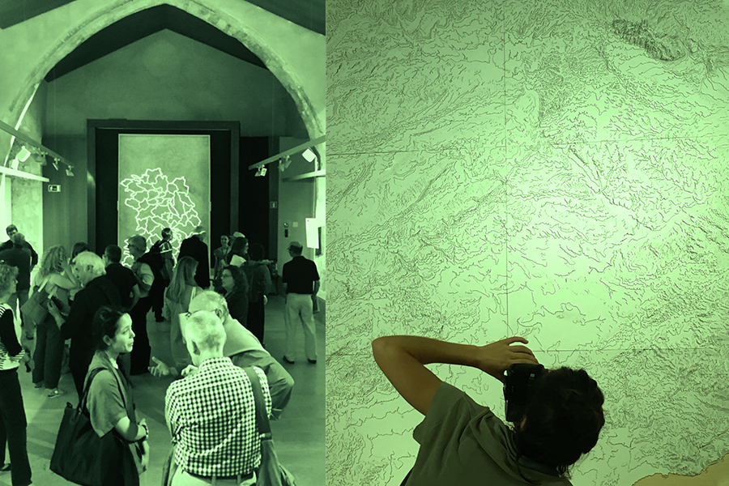
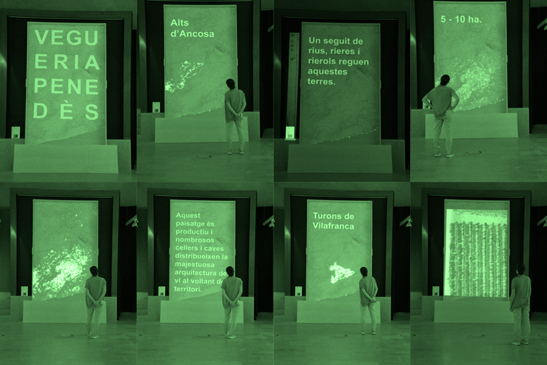
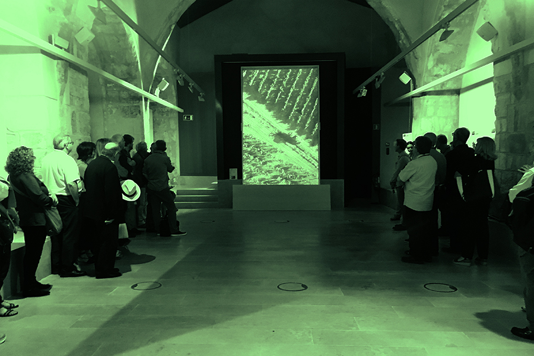

Exhibition material on the territorialization of wine-growing landscapes in the framework of the VII International Congress of Art, wine-growing and wine tourism landscape.
Collaboration in the cartography generation and video editing.




Collaboration with the CRUC (Centre de recerca urbana del camp), EAR (Escola Tècnica Superior d’Arquitectura), URV (Universitat Rovira i Virigili).
Coordination by: Josep M. Solé Gras